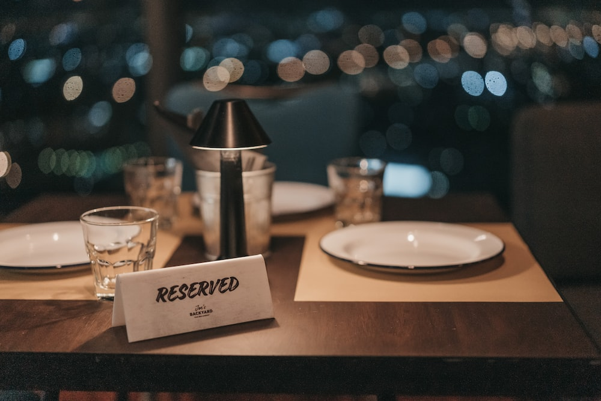
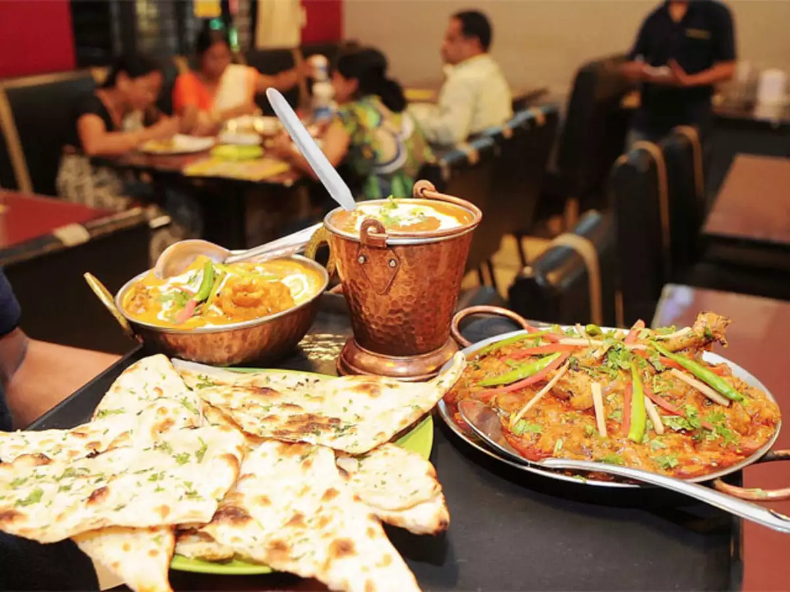

Our New Menu

1.Menu Management and Ordering System:
This program would streamline the process of ordering food and managing the menu, enhancing the dining experience for customers. It could include:
- Digital Menu: Provide an interactive digital menu accessible via mobile devices or tablets.
- Ordering: Allow customers to place orders from their tables.
- Customization: Enable customers to customize their orders, e.g., choose ingredients or specify cooking preferences.
- Order Tracking: Show the status of orders, from preparation to delivery.
- Integration: Integrate with the kitchen to transmit orders directly to chefs.
- Billing: Generate accurate bills based on ordered items, including taxes and optional tips.
- Allergen Information: Display allergen information for each dish.
See Your Menu Here
Book a Table

2. Reservation Management System:
This program would help the restaurant efficiently manage reservations and ensure smooth operations. Customers can make reservations online or by phone, and the program would handle the following tasks:
- Reservation Booking: Allow customers to select date, time, party size, and special requests.
- Availability Check: Display available time slots and tables.
- Confirmation: Send confirmation emails or messages to customers.
- Table Assignment: Automatically assign tables based on party size and preferences.
- Cancellations: Handle reservation cancellations and updates.
- Waitlist: Manage a waitlist for fully booked time slots.
- Reporting: Generate reports on reservations, peak hours, and popular tables.
Book Your Table Now
Opening Hours

3. Employee Scheduling and Shift Management System:
This program would assist the restaurant in scheduling staff shifts and ensuring proper staffing levels for different shifts. It would include features such as:
- Shift Creation: Managers can create and define shifts based on peak hours and staff availability.
- Employee Availability: Staff can input their availability and preferred working hours.
- Shift Assignments: Automatically assign staff to shifts while considering availability and skill levels.
- Swap and Request: Allow staff to request shift swaps and time-off requests.
- Notifications: Send reminders and notifications to staff about upcoming shifts.
- Overtime Management: Monitor and manage overtime hours to optimize staffing costs.
- Reporting: Generate reports on staff schedules, overtime, and attendance.